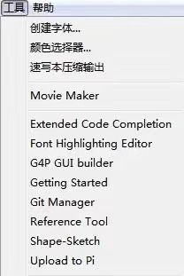

Processing
Processing基础知识
Processing是一种基于Java语言的开源编程语言和集成开发环境(IDE)。它主要用于视觉艺术、计算艺术和计算机图形学的开发。
Processing易于学习和理解，并有着强大的2D和3D图形渲染功能，快速生成交互式可视化效果。
在Processing基础知识介绍中，我们将介绍Processing的基本概念、语法和一些简单的项目示例。
1.以下是Processing的基本概念：
-
-Sketch:Processing中的程序被称为“Sketch”，它由setup()、draw()和其他函数组成。
-
- setup()函数:用于初始化程序，只在程序开始时运行一次。
-
- draw()函数:用于循环执行特定的代码块，用于绘制图形和实现交互等。
-
-Coordinates:Processing使用以左上角为原点的坐标系，x轴正方向向右，y轴正方向向下。
2.Processing的语法：
-
变量和常量:可以用于存储和操作数据。
-
-数据类型:包括整数型(int)、浮点型(float)、字符型(char)和布尔型(boolean) 等。
-
-运算符: 用于数学和逻辑运算，如加法(+)、减法(-)和等于(==) 等。
-
-控制流程:使用条件语句(if-else)和循环语句(for、while)等来控制程序的流程和执行。
3.示例项目：
-
-绘制几何图形:使用Processing的绘图函数和基本形状函数来绘制简单的几何图形，如矩形、圆形和线条等。
-
-交互式动画:使用鼠标和键盘事件的处理来实现简单的交互效果，如拖动、点击和键盘控制等。
-
-数据可视化: 使用Processing的图形渲染和数据处理功能来创建漂亮的数据可视化效果，如柱状图和散点图等。
-
-基本游戏:使用Processing的2D图形和输入处理功能来创建简单的游戏，如跳跃游戏和射击游戏等。
Processing基本工具延深
(1)介绍
processing界面简洁，上手容易，这让我们可以专注于使用代码创作。但创作过程中，你总会遇上一些不愉快的体验:比如想要使用某种颜色，却不知道它的代码;或者加个线条，需要精确计算位置。
因此我要来介绍一下processing中你可能没有注意到的工具，包括软件本身的以及第三方提供的。 因此我要来介绍一下processing中你可能没有注意到的工具，包括软件本身的以及第三方提供的。
通过这些工具，可以大大增加你的创作效率，并且可以在菜单栏的工具选项中添加工具中找到第三方工具列表。

下载的工具都可在工具列表中找到
(2)工具介绍
-
1.颜色选择器:颜色选择器可以让你快速创建一个颜色，而不用通过给各个颜色通道添加数值的方式添加颜色，这让你在选择颜色的时候可以清楚地看到选中的是哪一种颜色。
-
2.References Tool：这是一个方便使用者查询processing中各类基本元素的工具，相当于将官网中references的重要信息收集在了这里，你可以快速查询你需要的各类reference.
-
3.Shape-Skech:它提供给使用者一个画图板，提供了基本的几何图形，可进行颜色选择，笔画调节，画布大小调节。更方便的是，当你完成了图形，只需要点击转移代码按钮，就可以将图形自动转化为代码，processing会把你画的图形自动整合成一个方法供你调用。
-
4.showuseage:这个功能可以在选择一段代码后右键找到，在useage列表里，会列出使用到你选中的代码的那一行的代码，单击可以跳转到那一行，这样想知道这段代码在哪里有使用到就很方便了。
-
5.量名称更改：当你想要改变某个在程序中已经出现过很多次的变量的时候，你可以用两种方式快速地改变。一种是调出查找，编辑》查找（ctrl+f），填入你需要替换的变量名即可。
-
6.Font Highlighting Editor:如果你看厌倦了processing的变量颜色，你可以在工具列表中下载一个FontHighlighting Editor 来自定义变量的颜色。